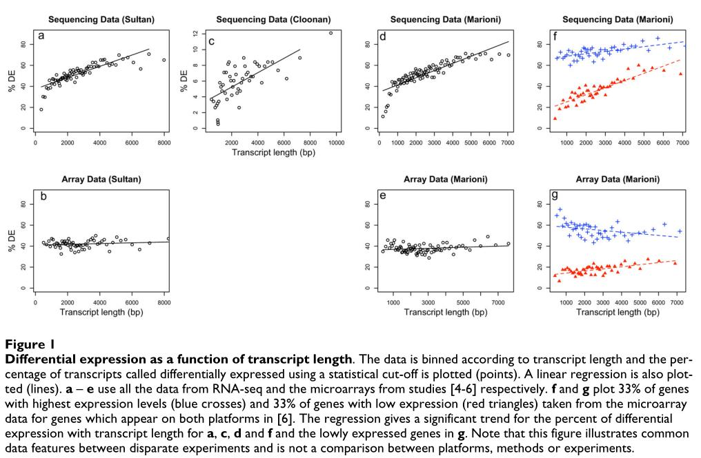
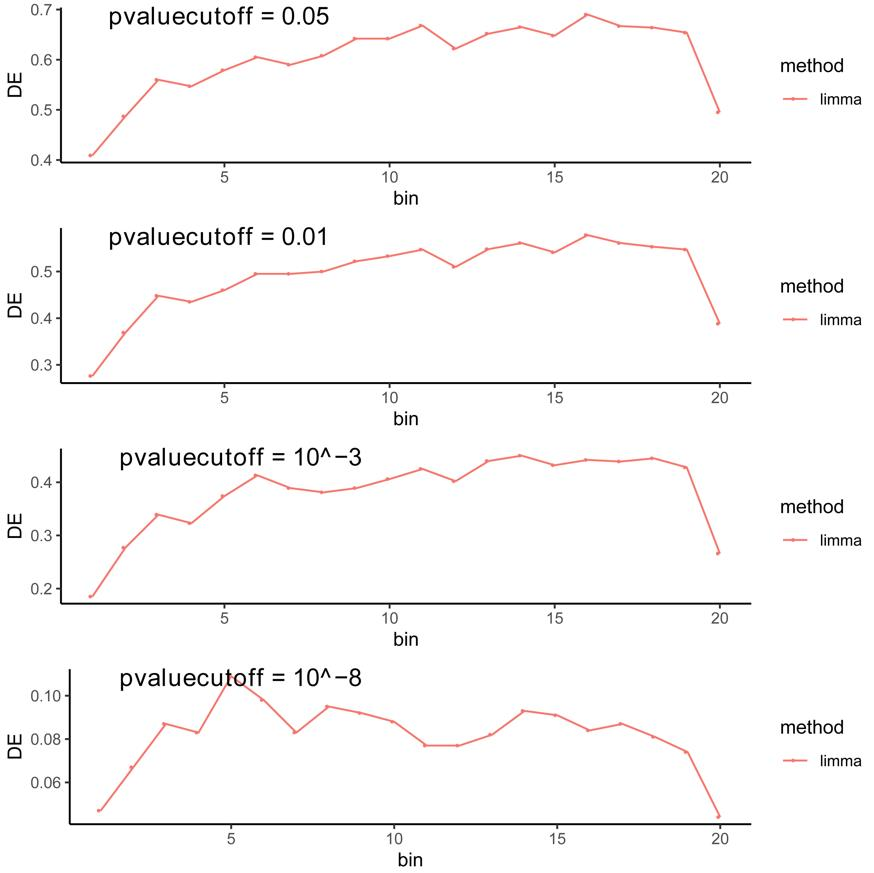
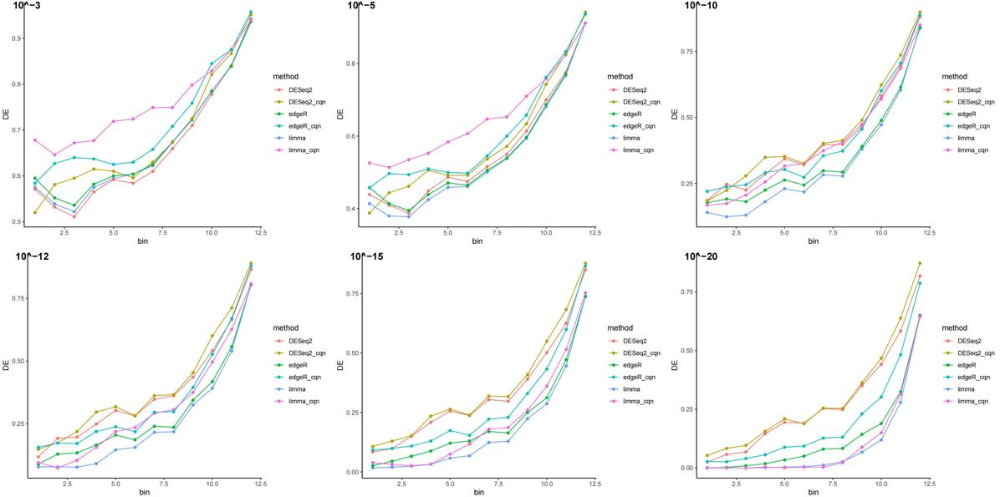
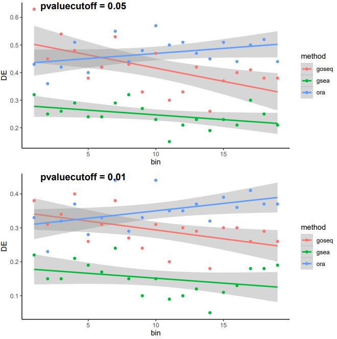
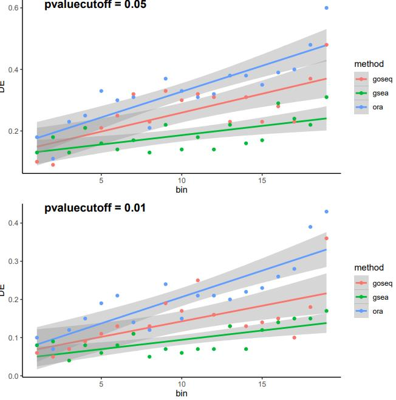
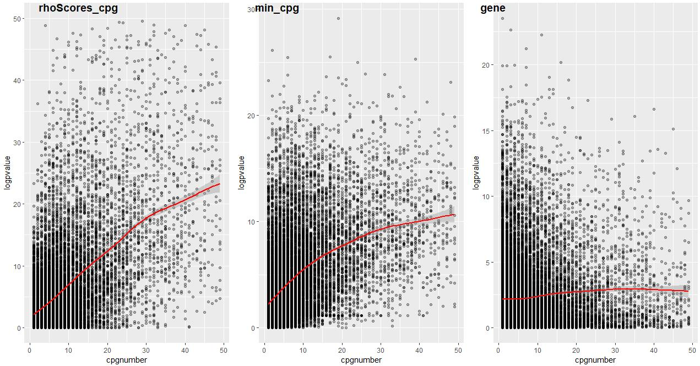

The goal of GeoTcgaData is to deal with RNA-seq, DNA Methylation, single nucleotide Variation and Copy number variation data in GEO and TCGA.
✍️ Authors
Erqiang Hu
Department of Bioinformatics, School of Basic Medical Sciences, Southern Medical University.

⏬ Installation
Get the released version from CRAN:
install.packages("GeoTcgaData")Or the development version from github:
if(!requireNamespace("devtools", quietly = TRUE))
install.packages("devtools")
devtools::install_github("YuLab-SMU/GeoTcgaData")
library(GeoTcgaData)
#> =============================================================
#> Hello, friend! welcome to use GeoTcgaData!
#> -------------------------------------------------------------
#> Version:1.1.1.993
#> =============================================================GEO and TCGA provide us with a wealth of data, such as RNA-seq, DNA Methylation, single nucleotide Variation and Copy number variation data. It’s easy to download data from TCGA using the gdc tool or TCGAbiolinks, and some software provides organized TCGA data, such as UCSC Xena , UCSCXenaTools，and sangerbox, but processing these data into a format suitable for bioinformatics analysis requires more work. This R package was developed to handle these data.
RNA-seq data differential expression analysis
It is convenient to use TCGAbiolinks or GDCRNATools to download and analysis Gene expression data. TCGAbiolinks use edgeR package to do differential expression analysis, while GDCRNATools can implement three most commonly used methods: limma, edgeR , and DESeq2 to identify differentially expressed genes (DEGs).
Alicia Oshlack et. al. claimed that unlike the chip data, the RNA-seq data had one bias: the larger the transcript length / mean read count , the more likely it was to be identified as a differential gene, while there was no such trend in the chip data.

However, when we use their chip data for difference analysis( using the limma package), we find that chip data has the same trend as RNA-seq data. And we also found this trend in the difference analysis results given by the data authors.

It is worse noting that only technical replicate data, which has small gene dispersions, shows this bias. This is because in technical replicate RNA-seq data a long gene has more reads mapping to it compared to a short gene of similar expression, and most of the statistical methods used to detect differential expression have stronger detection ability for genes with more reads. However, we have not deduced why there is such a bias in the current difference analysis algorithms.
Some software, such as CQN , present a normalization algorithm to correct systematic biases(gene length bias and GC-content bias. But they did not provide sufficient evidence to prove that the correction is effective. We use the Marioni dataset to verify the correction effect of CQN and find that there is still a deviation after correction:

GOseq based on Wallenius’ noncentral hypergeometric distribution can effectively correct the gene length deviation in enrichment analysis. However, the current RNA-seq data often have no gene length bias, but only the expression amount(read count) bias, GOseq may overcorrect these data, correcting originally unbiased data into reverse bias. 
GOseq also fails to correct for expression bias, therefore, read count bias correction is still a challenge for us. 
use TCGAbiolinks to download TCGA data
# download RNA-seq data
library(TCGAbiolinks)
query <- GDCquery(project = "TCGA-ACC",
data.category = "Transcriptome Profiling",
data.type = "Gene Expression Quantification",
workflow.type = "STAR - Counts")
GDCdownload(query, method = "api", files.per.chunk = 3,
directory = Your_Path)
dataRNA <- GDCprepare(query = query, directory = Your_Path,
save = TRUE, save.filename = "dataRNA.RData")
## get raw count matrix
dataPrep <- TCGAanalyze_Preprocessing(object = dataRNA,
cor.cut = 0.6,
datatype = "STAR - Counts")Use differential_RNA to do difference analysis. We provide the data of human gene length and GC content in gene_cov.
group <- sample(c("grp1", "grp2"), ncol(dataPrep), replace = TRUE)
library(cqn) # To avoid reporting errors: there is no function "rq"
## get gene length and GC content
library(org.Hs.eg.db)
genes_bitr <- bitr(rownames(gene_cov), fromType = "ENTREZID", toType = "ENSEMBL",
OrgDb = org.Hs.eg.db, drop = TRUE)
genes_bitr <- genes_bitr[!duplicated(genes_bitr[,2]), ]
gene_cov2 <- gene_cov[genes_bitr$ENTREZID, ]
rownames(gene_cov2) <- genes_bitr$ENSEMBL
genes <- intersect(rownames(dataPrep), rownames(gene_cov2))
dataPrep <- dataPrep[genes, ]
geneLength <- gene_cov2[genes, "length"]
gccontent <- gene_cov2[genes, "GC"]
names(geneLength) <- names(gccontent) <- genes
## Difference analysis
DEGAll <- differential_RNA(counts = dataPrep, group = group,
geneLength = geneLength, gccontent = gccontent)Use clusterProfiler to do enrichment analytics:
diffGenes <- DEGAll$logFC
names(diffGenes) <- rownames(DEGAll)
diffGenes <- sort(diffGenes, decreasing = TRUE)
library(clusterProfiler)
library(enrichplot)
library(org.Hs.eg.db)
gsego <- gseGO(gene = diffGenes, OrgDb = org.Hs.eg.db, keyType = "ENSEMBL")
dotplot(gsego)DNA Methylation data integration
use TCGAbiolinks to download TCGA data.
The codes may need to be modified if TCGAbiolinks updates. So please read its documents.
library(TCGAbiolinks)
query <- GDCquery(project = "TCGA-ACC",
data.category = "DNA Methylation",
data.type = "Methylation Beta Value",
platform = "Illumina Human Methylation 450")
GDCdownload(query, method = "api", files.per.chunk = 5, directory = Your_Path)The function Merge_methy_tcga could Merge methylation data downloaded from TCGA official website or TCGAbiolinks. This makes it easier to extract differentially methylated genes in the downstream analysis. For example:
merge_result <- Merge_methy_tcga(Your_Path_to_DNA_Methylation_data)Then use ChAMP package to do difference analysis.
if (!requireNamespace("ChAMP", quietly = TRUE))
BiocManager::install("ChAMP")
library(ChAMP) # To avoid reporting errors
differential_gene <- methyDiff(cpgData = merge_result, sampleGroup = sample(c("C","T"),
ncol(merge_result[[1]]), replace = TRUE))Note: ChAMPhas a large number of dependent packages. If you cannot install it successfully, you can download each dependent package separately(Source or Binary) and install it locally.
If your methylation data was downloaded from UCSC Xena, you can use methydifferential_ucsc to get differential genes.
methy_file <- "TCGA.THCA.sampleMap_HumanMethylation450.gz"
methy <- fread(methy_file, sep = "\t", header = T)
library(ChAMP)
myImport <- champ.import(directory=system.file("extdata",package="ChAMPdata"))
myfilter <- champ.filter(beta=myImport$beta,pd=myImport$pd,detP=myImport$detP,beadcount=myImport$beadcount)
cpg_gene <- hm450.manifest.hg19[, c("probeID", "gene_HGNC")]
## or use IlluminaHumanMethylation450kanno.ilmn12.hg19 to get annotation data
# library(IlluminaHumanMethylation450kanno.ilmn12.hg19)
# ann <- getAnnotation(IlluminaHumanMethylation450kanno.ilmn12.hg19)
# class(ann) <- "data.frame"
# cpg_gene <- ann[,c("Name", "UCSC_RefGene_Name", "UCSC_RefGene_Group")]
methy_df <- methydifferential_ucsc(methy, cpg_gene)We provide three models to get methylation difference genes:
if model = “cpg”, step1: calculate difference cpgs; step2: calculate difference genes;
if model = “gene”, step1: calculate the methylation level of genes; step2: calculate difference genes.
We find that only model = “gene” has no deviation of CpG number.

Use clusterProfiler to do enrichment analytics:
differential_gene$p.adj <- p.adjust(differential_gene$pvalue)
genes <- differential_gene[differential_gene$p.adj < 0.05, "gene"]
library(clusterProfiler)
library(enrichplot)
library(org.Hs.eg.db)
ego <- enrichGO(gene = genes, OrgDb = org.Hs.eg.db, keyType = "SYMBOL")
dotplot(ego)Copy number variation data integration and differential gene extraction
use TCGAbiolinks to download TCGA data(Gene Level Copy Number Scores)
library(TCGAbiolinks)
query <- GDCquery(project = "TCGA-LGG",
data.category = "Copy Number Variation",
data.type = "Gene Level Copy Number Scores")
GDCdownload(query, method = "api", files.per.chunk = 5, directory = Your_Path)
data <- GDCprepare(query = query,
directory = Your_Path) Do difference analysis of gene level copy number variation data using differential_CNV
class(data) <- "data.frame"
cnvData <- data[, -c(1,2,3)]
rownames(cnvData) <- data[, 1]
sampleGroup = sample(c("A","B"), ncol(cnvData), replace = TRUE)
diffCnv <- differential_CNV(cnvData, sampleGroup)Use clusterProfiler to do enrichment analytics:
pvalues <- diffCnv$pvalue * sign(diffCnv$odds)
genes <- rownames(diffCnv)[diffCnv$pvalue < 0.05]
library(clusterProfiler)
library(enrichplot)
library(org.Hs.eg.db)
ego <- enrichGO(gene = genes, OrgDb = org.Hs.eg.db, keyType = "ENSEMBL")
dotplot(ego)Difference analysis of single nucleotide Variation data
Use TCGAbiolinks to download TCGA data
library(TCGAbiolinks)
query <- GDCquery(project = "TCGA-ACC",
data.category = "Simple Nucleotide Variation",
data.type = "Masked Somatic Mutation",
workflow.type = "MuSE Variant Aggregation and Masking")
GDCdownload(query, method = "api", files.per.chunk = 5, directory = Your_Path)
data_snp <- GDCprepare(query = query,
directory = Your_Path) Use differential_SNP_tcga to do difference analysis
samples <- unique(data_snp$Tumor_Sample_Barcode)
sampleType <- sample(c("A","B"), length(samples), replace = TRUE)
names(sampleType) <- samples
pvalue <- differential_SNP_tcga(snpData = data_snp, sampleType = sampleType)
# merge pvalueUse clusterProfiler to do enrichment analysis
pvalue2 <- sort(pvalue, decreasing = TRUE)
library(clusterProfiler)
library(enrichplot)
library(org.Hs.eg.db)
gsego <- gseGO(pvalue2, OrgDb = org.Hs.eg.db, keyType = "SYMBOL")
dotplot(gsego)GEO chip data processing
The function gene_ave could average the expression data of different ids for the same gene in the GEO chip data. For example:
aa <- c("MARCH1","MARC1","MARCH1","MARCH1","MARCH1")
bb <- c(2.969058399,4.722410064,8.165514853,8.24243893,8.60815086)
cc <- c(3.969058399,5.722410064,7.165514853,6.24243893,7.60815086)
file_gene_ave <- data.frame(aa=aa,bb=bb,cc=cc)
colnames(file_gene_ave) <- c("Gene", "GSM1629982", "GSM1629983")
result <- gene_ave(file_gene_ave, 1)Multiple genes symbols may correspond to a same chip id. The result of function repAssign is to assign the expression of this id to each gene, and function repRemove deletes the expression. For example:
aa <- c("MARCH1 /// MMA","MARC1","MARCH2 /// MARCH3","MARCH3 /// MARCH4","MARCH1")
bb <- c("2.969058399","4.722410064","8.165514853","8.24243893","8.60815086")
cc <- c("3.969058399","5.722410064","7.165514853","6.24243893","7.60815086")
input_file <- data.frame(aa=aa,bb=bb,cc=cc)
repAssign_result <- repAssign(input_file," /// ")
repRemove_result <- repRemove(input_file," /// ")Other downstream analyses
- The function
id_conversioncould convert gene id from one ofsymbol,RefSeq_ID,Ensembl_ID,NCBI_Gene_ID,UCSC_ID, andUniProt_ID, etc. to another. Useid_ava()to get all the convertible ids. For example:
id_conversion("symbol", "ensembl_gene_id", c("A2ML1", "A2ML1-AS1", "A4GALT", "A12M1", "AAAS"))
#> 80% were successfully converted.
#> from to
#> 1 A2ML1 ENSG00000166535
#> 2 A2ML1-AS1 ENSG00000256661
#> 3 A4GALT ENSG00000128274
#> 4 AAAS ENSG00000094914When the user converts the Ensembl ID to other ids, the version number needs to be removed. For example, “ENSG00000186092.4” doesn’t work, you need to change it to “ENSG00000186092”.
Especially, the function id_conversion could convert ENSEMBL gene id to gene Symbol in TCGA. For example:
result <- id_conversion(profile)
#>
#>
#> 'select()' returned 1:1 mapping between keys and columns
#> Warning in clusterProfiler::bitr(rownames(profiles), fromType = "ENSEMBL", :
#> 33.33% of input gene IDs are fail to map...The parameter profile is a data.frame or matrix of gene expression data in TCGA.
Note: In previous versions(< 1.0.0) the id_conversion and id_conversion used HGNC data to convert human gene id. In future versions, we will use clusterProfiler::bitr for ID conversion.
library(clusterProfiler)
#> clusterProfiler v4.5.2.001 For help: https://yulab-smu.top/biomedical-knowledge-mining-book/
#>
#> If you use clusterProfiler in published research, please cite:
#> T Wu, E Hu, S Xu, M Chen, P Guo, Z Dai, T Feng, L Zhou, W Tang, L Zhan, X Fu, S Liu, X Bo, and G Yu. clusterProfiler 4.0: A universal enrichment tool for interpreting omics data. The Innovation. 2021, 2(3):100141
#>
#> 载入程辑包：'clusterProfiler'
#> The following object is masked from 'package:stats':
#>
#> filter
library(org.Hs.eg.db)
#> 载入需要的程辑包：AnnotationDbi
#> 载入需要的程辑包：stats4
#> 载入需要的程辑包：BiocGenerics
#>
#> 载入程辑包：'BiocGenerics'
#> The following objects are masked from 'package:stats':
#>
#> IQR, mad, sd, var, xtabs
#> The following objects are masked from 'package:base':
#>
#> anyDuplicated, append, as.data.frame, basename, cbind, colnames,
#> dirname, do.call, duplicated, eval, evalq, Filter, Find, get, grep,
#> grepl, intersect, is.unsorted, lapply, Map, mapply, match, mget,
#> order, paste, pmax, pmax.int, pmin, pmin.int, Position, rank,
#> rbind, Reduce, rownames, sapply, setdiff, sort, table, tapply,
#> union, unique, unsplit, which.max, which.min
#> 载入需要的程辑包：Biobase
#> Welcome to Bioconductor
#>
#> Vignettes contain introductory material; view with
#> 'browseVignettes()'. To cite Bioconductor, see
#> 'citation("Biobase")', and for packages 'citation("pkgname")'.
#> 载入需要的程辑包：IRanges
#> 载入需要的程辑包：S4Vectors
#>
#> 载入程辑包：'S4Vectors'
#> The following object is masked from 'package:clusterProfiler':
#>
#> rename
#> The following objects are masked from 'package:base':
#>
#> expand.grid, I, unname
#>
#> 载入程辑包：'IRanges'
#> The following object is masked from 'package:clusterProfiler':
#>
#> slice
#> The following object is masked from 'package:grDevices':
#>
#> windows
#>
#> 载入程辑包：'AnnotationDbi'
#> The following object is masked from 'package:clusterProfiler':
#>
#> select
bitr(c("A2ML1", "A2ML1-AS1", "A4GALT", "A12M1", "AAAS"), fromType = "SYMBOL",
toType = "ENSEMBL", OrgDb = org.Hs.eg.db, drop = FALSE)
#> 'select()' returned 1:1 mapping between keys and columns
#> Warning in bitr(c("A2ML1", "A2ML1-AS1", "A4GALT", "A12M1", "AAAS"), fromType =
#> "SYMBOL", : 40% of input gene IDs are fail to map...
#> SYMBOL ENSEMBL
#> 1 A2ML1 ENSG00000166535
#> 2 A2ML1-AS1 <NA>
#> 3 A4GALT ENSG00000128274
#> 4 A12M1 <NA>
#> 5 AAAS ENSG00000094914- The function
countToFpkmandcountToTpmcould convert count data to FPKM or TPM data.
lung_squ_count2 <- matrix(c(1, 2, 3, 4, 5, 6, 7, 8, 9), ncol = 3)
rownames(lung_squ_count2) <- c("DISC1", "TCOF1", "SPPL3")
colnames(lung_squ_count2) <- c("sample1", "sample2", "sample3")
result <- countToFpkm(lung_squ_count2,
keyType = "SYMBOL",
gene_cov = gene_cov
)
#> 'select()' returned 1:1 mapping between keys and columns
#> Warning in clusterProfiler::bitr(rownames(gene_cov), fromType = "ENTREZID", :
#> 0.05% of input gene IDs are fail to map...
result
#> sample1 sample2 sample3
#> DISC1 11449.25 18318.79 20036.18
#> TCOF1 29140.08 29140.08 29140.08
#> SPPL3 69473.39 55578.71 52105.04
lung_squ_count2 <- matrix(c(1, 2, 3, 4, 5, 6, 7, 8, 9), ncol = 3)
rownames(lung_squ_count2) <- c("DISC1", "TCOF1", "SPPL3")
colnames(lung_squ_count2) <- c("sample1", "sample2", "sample3")
result <- countToTpm(lung_squ_count2,
keyType = "SYMBOL",
gene_cov = gene_cov
)
#> 'select()' returned 1:1 mapping between keys and columns
#> Warning in clusterProfiler::bitr(rownames(gene_cov), fromType = "ENTREZID", :
#> 0.05% of input gene IDs are fail to map...
result
#> sample1 sample2 sample3
#> DISC1 104024.7 177787.5 197827.0
#> TCOF1 264758.8 282810.2 287714.3
#> SPPL3 631216.4 539402.3 514458.7- The function
tcga_cli_dealcould combine clinical information obtained from TCGA and extract survival data. For example:
tcga_cli <- tcga_cli_deal(system.file(file.path("extdata","tcga_cli"),package="GeoTcgaData"))Note: Now the combined clinical data can be downloaded directly from TCGAbiolinks.
library(TCGAbiolinks)
## get BCR Biotab data
query <- GDCquery(project = "TCGA-ACC",
data.category = "Clinical",
data.type = "Clinical Supplement",
data.format = "BCR Biotab")
GDCdownload(query)
clinical.BCRtab.all <- GDCprepare(query)
names(clinical.BCRtab.all)
## get indexed data
clinical <- GDCquery_clinic(project = "TCGA-ACC", type = "clinical")